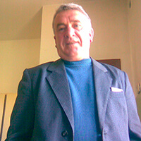
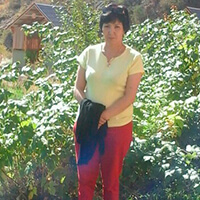
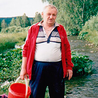
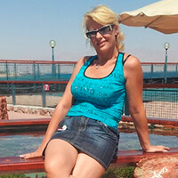
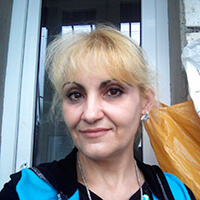

Σημείωση συντάκτη: σύμφωνα με τις στατιστικές, κάθε όγδοος Έλληνας πολίτης πάσχει από οστεοχόνδρωση, διάφορες παθήσεις των αρθρώσεων (αρθροπάθεια, αρθρίτιδα, ισχιαλγία). Δεν φαίνεται να είναι θανατηφόρο, αλλά ... Στην αρχή ο ασθενής αναγκάζεται να μην ζει, αλλά να υπάρχει. Και μόνο μετά, λόγω του περιορισμού της κινητικότητας, υπάρχουν ταυτόχρονες ασθένειες όπως η κήλη, οι μεταβολικές διαταραχές και η έλλειψη της δυνατότητας βάδισης. Σχετικά με το πώς να απαλλαγούμε από τα προβλήματα του μυοσκελετικού συστήματος και να γίνουμε υγιή άτομα, ρωτήσαμε τον M.D., καθηγητή κο Αλέξανδρο Δαβάκη
— Καλημέρα, κύριε Δαβάκη. Πείτε μας, αν είναι αλήθεια ότι τέτοιες μη θανατηφόρες, με την πρώτη ματιά, ασθένειες όπως η ισχιαλγία και η οστεοχόνδρωση μπορούν να προκαλέσουν πιο σοβαρές ασθένειες; Και αν είναι αλήθεια ότι κάθε όγδοος Ελληνας είναι άρρωστος;
— Καλημέρα, Ειρήνη. Από την ίδια την οστεοχόνδρωση ή και την ισχυαλγία δεν πεθαίνουν. Αλλά, υπάρχει ένα σημαντικό σημείο - αν δεν αντιμετωπιστούν, κυριολεκτικά μέσα σε έξι μήνες εμφανίζεται ένα μπουκέτο συναφών ασθενειών. Αυτή είναι και η αύξηση του βάρους και η καμπυλότητα της σπονδυλικής στήλης και οι μεταβολικές διαταραχές. Και αυτό που είναι το πιο φοβερό - στα τελευταία στάδια στις αρθρώσεις μπορουν να εμφανιστούν κακοήθειες που οδηγούν σε καρκίνο.
«Για παράδειγμα, χωρίς θεραπεία η κήλη μπορεί να μετατραπεί σε καρκίνο. Ναι, μπορεί να εγχειριστεί, αλλά ... Είναι πλάτη. Μπορείς να μείνεις ανάπηρος.
Σχετικά με τα στατιστικά στοιχεία: Δυστυχώς, ναι – από την οστεοχόνδρωση και την ισχυαλγία στο σύνολό τους πάσχουν περισσότερο από το 50% του πληθυσμού της Ελλάδας. Και, το χειρότερο, αυτές οι ασθένειες γίνονται «νεότερες». Αν προηγουμένως σε θεραπεία υποβάλλονταν τα άτομα ηλικίας πάνω από 40 ετών, τώρα άρχισαν να έρχονται και οι νέοι.
Γι΄αυτό, όταν σας άρχισαν να πονάνε η πλάτη, ο λαιμός ή οι αρθρώσεις, μην το δικαιολογήσετε με την κόπωση. Το πιο πιθανόν, έχετε προσβληθεί από μια από αυτές τις ασθένειες.
— Τι πρέπει να κάνουμε σ’ αυτήν την κατάσταση;
— Θα απαντήσω: να κάνετε αγωγή. Εδώ όμως υπάρχουν δύο προβλήματα.
Πρώτον, στα περισσότερα νοσοκομεία δεν υπάρχουν ειδικοί χειρουργοί ρευματολόγοι οι οποίοι θα μπορούσαν να διαγνώσουν και να συνταγογραφήσουν τη θεραπεία εγκαίρως.
Δεύτερον, οι κατά τόπους χειρουργοί ρευματολόγοι συχνά δεν εμβαθύνονται στην ουσία του προβλήματος, επειδή οι ασθένειες αυτές θεωρούνται χρόνιες και όχι επικίνδυνες. Απλώς συνταγογραφούν τις γέλες που εξαλείφουν τον πόνο και συστήνουν τις ασκήσεις γυμναστικής. Δηλαδή, ως αποτέλεσμα, ο άνθρωπος παραμένει αντιμέτωπος με το πρόβλημα και τον πόνο του.
Φυσικά, το ίδρυμά μας, εγώ και η ομάδα μου προσπαθούμε να λύσουμε αυτή την κατάσταση. Όμως, δυστυχώς, δεν μπορούμε να δίνουμε διαταγές στις τοπικές πολυκλινικές και να ρυθμίσουμε την κατάσταση.
Ως εκ τούτου, αποφασίσαμε να ακολουθήσουμε μια διαφορετική πορεία και πρόσφατα πραγματοποιήσαμε μια πραγματική επανάσταση στο πλαίσιο του διεθνούς προγράμματος «No Pain». Είμαστε σίγουροι ότι αυτό θα βοηθήσει στην αλλαγή της κατάστασης στη χώρα και θα βοηθήσει τους ανθρώπους να ζήσουν μια πλήρη ζωή.
— Δηλαδή, εσείς ήδη έχετε λύση για τους πόνους στην πλάτη, στο λαιμό και στις αρθρώσεις;
— Ναι, έχω. Στα πλαίσια του έργου, αποκτήσαμε πρόσβαση στο πρώτο φάρμακο που δημιουργήθηκε στα πλαίσια αυτού του προγράμματος—στην γέλη "". Προηγουμένως, το προϊόν αυτό δεν μπορούσες να προμηθευτείς στην Ελλάδα, καθώς δεν υπήρχε άδεια και απαραίτητη παραγωγική ικανότητα και όλες οι διαθέσιμες παρτίδες εξαγοράζονταν στην ίδια την Κίνα και στις Ηνωμένες Πολιτείες. Καταφέραμε να λάβουμε μέρος στην ανάπτυξη και την έρευνα της γέλης"", η οποία τώρα κάνει την εμφάνισή της και στην Ελλάδα
— Tι ακριβώς αποτελεί την καινοτομία, τι φάρμακο είναι αυτό;
— είναι μια ελεγμένη γέλη για την καταπολέμηση του πόνου στις αρθρώσεις, της αρθρίτιδας και της αρθροπάθειας, αυτή απλώς επανεκκινεί τον οργανισμό και εκκινεί την αναγέννηση των χαλασμένων κυττάρων. Δηλαδή, εξαλείφει την αιτία του ίδιου του πόνου και επιστρέφει την σπονδυλική στήλη, τις αρθρώσεις στην αρχική, κανονική τους κατάσταση. Δηλαδή, ως αποτέλεσμα, ο ασθενής όχι μόνο απαλλάσσεται από τα συμπτώματα, αλλά γίνεται εντελώς υγιής άνθρωπος.
Αρχικά, το επανεκκινεί το σύστημα αναγέννησης του οργανισμού, αντιμετωπίζοντας συγχρόνως το σύνδρομο του πόνου. Ήδη μετά από δύο ή τρεις εβδομάδες, η θεραπεία θα ολοκληρωθεί και, το σημαντικότερο θα είναι να αποφευχθεί η επανεμφάνιση του πόνου, επαναλαμβάνοντας αμέσως την αγωγή.
— Η γέλη "" βοηθά μόνο σε περιπτώσεις της οστεοχόνδρωσης, της ισχιαλγίας και της αρθροπάθειας;
— Όχι μόνο. Με τη βοήθειά της, μπορεί να θεραπευτεί οποιαδήποτε ασθένεια που σχετίζεται με ασθένειες των αρθρώσεων ή της σπονδυλικής στήλης – η αρθροπάθεια και η αρθρίτιδα, η ισχιαλγία, οι ρευματισμοί, η ισχιαλγία και η οστεοχόνδρωση, η μετατόπιση σπονδυλικών δίσκων. Μπορεί επίσης να χρησιμοποιηθεί για κάλους, οστεόφυτα, για την εξάλειψη του «ακρωμίου» (συγκέντρωση λίπους στην περιοχή του τέταρτου σπονδύλου), των τραυματισμών, των καταγμάτων,των εξάρσεων και πολλών άλλων νόσων.
— Είναι πολύ ενδιαφέρον φάρμακο. Και τι, αυτό όντως απαλλάσσει απ’ όλες αυτές τις ασθένειες και όχι απλά εξαλείφει τον πόνο;
— Η γέλη "" και εξαλείφει τον πόνο (σε πρώιμα στάδια της θεραπείας), και αφανίζει εξ ολοκλήρου την ασθένεια. Τώρα είναι το μοναδικό φάρμακο που πραγματικά βοηθάει.
— Δηλαδή, το μπορούμε να αγοράσουμε στην Ελλάδα; Και, εδώ που τα λέμε, που παρασκευάζεται αυτή;
— Ναι, αυτή τη στιγμή το μπορούμε να αγοράσουμε και στην Ελλάδα. Αυτό κατέστη δυνατό χάρη του γεγονότος ότι είχαμε ενταχθεί στο έργο και βοηθάμε στην ανάπτυξή του. Το παρασκευάζεται με βάση την αρχαία συνταγή των Selkup, που κατοικούν στα βορειοδυτικά της Σιβηρίας. Η συνταγή μεταδίδεται από γενιά σε γενιά και διατηρείται με την αυστηρότερη μυστικότητα.
Επιπλέον, το Υπουργείο Υγείας αποφάσισε να συμμετάσχει στο πρόγραμμα και να αποκαταστήσει το κόστος παράδοσης. Γι’ αυτό η γέλη "" κοστίζει 2 φορές φθηνότερα από ό, τι πωλείται σε άλλες χώρες.
— Από πού μπορούμε να προμηθευτούμε το ?
— Θέλαμε να ξεκινήσουμε μιας μεγάλης κλίμακας πωλήσεις σε δίκτυα φαρμακείων της χώρας, αλλά δυστυχώς, τα φαρμακεία δεν θέλουν να πουλάνε την γέλη "" κάτω από την τιμή κόστους και θέλουν ένα μεγάλο ποσοστό.
Γι’ αυτό, εγκαταλείψαμε αυτήν την ιδέα και αποφασίσαμε να οργανώσουμε τις πωλήσεις στο Διαδίκτυο , για να διατηρήσουμε την χαμηλή τιμή και να κάνουμε τη θεραπεία προσιτή σε όσο το δυνατόν περισσότερους ανθρώπους. Τώρα μπορείτε να αγοράσετε την γέλη στην επίσημη ιστοσελίδα του έργου.
Η παράδοση γίνεται μέσω ταχυδρομείου, με αντικαταβολή, και για την χρήση δεν χρειάζεται η επίβλεψη του ειδικού – η θεραπεία είναι απολύτως απλή.
— Κύριε Δαβάκη, ευχαριστούμε για την συνέντευξη! Μήπως θα θέλατε να πείτε κάτι στους αναγνώστες μας προτού σας αποχαιρετήσουμε;
— Ναι, βέβαια. Θέλω να επιστήσω την προσοχή των αναγνωστών μας, ότι οι ασθένειες της πλάτης και των αρθρώσεων «γίνονται νεότερες», και ακόμα και οι ασθενείς περιοδικοί πόνοι είναι ένας λόγος για να δοθεί προσοχή στο πρόβλημα. Η σωτηρία της υγείας σας εξαρτάται αποκλειστικά από σας. Ο γιατρός δεν θα σας πείθει να κάνετε θεραπεία. Όλα είναι στα χέρια σας.
Επίσης, αξίζει να θυμόμαστε ότι οι ασθένειες που προκύπτουν από τον πόνο στην πλάτη και στις αρθρώσεις δεν προκαλούν μόνο την δυσφορία. Σας στερούν μια κανονική ζωή και συντομεύουν τη ζωή σας κατά 10-15 χρόνια. Και η γέλη "" θα σας σώσει αυτά τα χρόνια, και θα μπορέσετε να τα ζήσετε κανονικά.
— Σας ευχαριστούμε, κύριε Δαβάκη! Και σας υπενθυμίζουμε ότι στα σχόλια μπορείτε να κάνετε τις ερωτήσεις σας ή να αφήσετε μια γνώμη για την γέλη "".
— Υ.Γ.: Μετά τη συνέντευξη, απευθυνθήκαμε στον κύριο Δαβάκη με μια ζήτηση. Και τώρα οι αναγνώστες της ιστοσελίδας μας έχουν την ευκαιρία να παραγγείλουν την γέλη « » με επιπλέον έκπτωση! Και να ξεχάσουμε για πάντα τις ασθένειες που σχετίζονται με τις αρθρώσεις και τη σπονδυλική στήλη.
Συνέντευξη πήρε η Ειρήνη Παπαδοπούλου
Φωτογραφίες από ανοιχτές
πηγές
Πέτρος- 2019

Για αρκετές δεκαετίες προσπαθούσα να θεραπεύσω την χρόνια ισχυαλγία και όλα μάταια. Αποφάσισα να δοκιμάσω το , για το οποίο μίλησε ο καθηγητής εδώ, η πλάτη πέρασε μέσα σε 5 εβδομάδες. Τώρα τρέχω σαν νεαρός.
Μαρίνα- 2019

Κύριε Δαβάκη, το θα βοηθήσει σε μώλωπες και αιματώματα; Το παιδί έχει λεπτό δέρμα, οι μώλωπες αργούν να περάσουν, και χτυπάει συνεχώς.
Κύριος Δαβάκης- 2019
Ναι, Μαρίνα, η γέλη θα βοηθήσει να απαλλαγείτε και από αυτό. Μπορείτε να την χρησιμοποιήσετε και για τραύματα, και για κατάγματα, και για διαστρέμματα.
Ελένη- 2019
Χρησιμοποιώ αυτή την γέλη για έξι μήνες (ένας φίλος μου την έφερε από την Κίνα). Έχω θεραπεύσει την αρθροπάθεια μέσα σε μόνο δυο με δυόμιση εβδομάδες, και τώρα συνεχώς την κρατώ στο σετ πρώτων βοηθειών, για κάθε ενδεχόμενο.
Μανώλης- 2019
Διάβασα το άρθρο και αμέσως αποφάσισα να παραγγείλω, για να δοκιμάσω το . Το θέμα είναι ότι τα συνήθη φάρμακα με βοηθούσαν για λίγο - η οστεοχόνδρωση, όπως μου έλεγαν, είναι δύσκολο να θεραπευτεί. Τώρα γράφω για τα αποτελέσματα. Το ήρθε πολύ γρήγορα. Ήδη την πρώτη μέρα αισθάνομαι τόσο ανακουφισμένος που απλά δεν μπορούσα να μην γράψω εδώ γι 'αυτό. Ευχαριστώ πολύ, τώρα μπορώ να ζήσω κανονικά!
Στέργιος- 2019

Διάβασα τις πρώτες απόψεις και επίσης αποφάσισα να παραγγείλω. Όταν έρθει, θα γράψω για τα αποτελέσματα .
Μαργαρίτα- 2019
Στο ιδιωτικό φαρμακείο ενός φίλου μας, αυτή η γέλη κοστίζει 3 φορές ακριβότερα, επομένως δεν τολμούσα να αγοράσω, λιπόμουν τα λεφτά. Και εδώ είδα την τιμή της και αμέσως παρήγγειλα, επειδή τόσα χρήματα μου επιτρέπει να πληρώσω η σύνταξή μου. Τα οστεόφυτα στα πόδια γίνονται μικρότερα μέρα με την μέρα, ενώ φαίνεται μια κανονική γέλη.
Κύριος Δαβάκης- 2019
Ευχαριστούμε για την γνώμη σας, Μαργαρίτα. Κάνατε σωστά, όταν αποφασίσατε να παραγγείλετε το στην επίσημη ιστοσελίδα, επειδή πωλείται μόνο εκεί. Αλλού μπορείτε να πάρετε απομίμηση.
Μαρία- 2019

Είναι ένα θαύμα! Χρησιμοποιώ την γέλη ήδη για τρεις εβδομάδες, πέρασαν όλοι οι πόνοι στην πλάτη, άρχισε να μειώνεται το ακρώμιο! Εύχομαι το έργο σας να έχει καλή τύχη!
Ναταλίαя- 2019
Πάντα έκανα υπομονή και νόμιζα, ότι δεν πρόκειται να απαλλαγώ από τους πόνους στα γόνατα. Τώρα σκέφτομαι να παραγγείλω την γέλη αυτή, μπας και βοηθήσει.
Βερονίκη- 2019
Τυχαία διάβασα αυτό το άρθρο. Και τι βλέπω!! Διαφημίζουν την δική μας γέλη "". Δηλαδή, όχι ακριβώς δική μου, εννοώ, την αγόρασα για τον άνδρα μου. Δεν ξέρει, ότι γράφω εδώ, αλλά θέλω να μοιραστώ. Αφού είναι και η δική μου χαρά, μάλλον καλύτερα είναι η εξ’ ολοκλήρου δική μου ευτυχία! Εν ολίγοις, και εγώ διάβαζα τις κριτικές, κοίταγα ποιος και πως και τελικά παρήγγειλα αυτή τη γέλη. Γιατί ο άνδρας μου ήδη βρισκόταν σε απόγνωση. Έπαιρνε τα χάπια, έκανε θεραπείες μασάζ, γι’ αυτό απέκτησε το πρόβλημα με το στομάχι, αποφασίζαμε τι να κάνουμε στην συνέχεια. Τέλος πάντων, αρχίσαμε να χρησιμοποιούμε την γέλη αυτή και γιούπι! Κανένα πρόβλημα στον αγαπημένο μου, πάλι είναι μέλος της οικογένειας, πάλι είναι ενεργός και δυνατός!
Κατερίνα- 2019

Ήταν η οστεοχόνδρωση, ήταν και έγινε καπνός... μετά από 10 ημέρες εξαφανίστηκαν όλα! Ευχαριστώ την Σιβηρία για τέτοιο θαύμα! Κι μπράβο σε σας, κύριε Δαβάκη, είστε δυνατός άνθρωπός, τόσα περάσατε. Δια πυρός και σιδήρου! Έτσι μπράβο! Να είστε καλά και καλή τύχη σε όλους!
Δημήτριος- 2019
Θέλω να προσπαθήσω να απαλλαγώ από την οστεοχόνδρωση το συντομότερο δυνατό, και κυρίως, εύκολα και ανώδυνα. Νομίζω ότι αυτή είναι η περίπτωσή μου. Σας ευχαριστώ πολύ για τις πληροφορίες, ακόμα σήμερα θα στείλω μια παραγγελία, ελπίζω ότι δεν τα έχουν εξαντλήσει όλα
Ξένια- 2019
Ο σύζυγός μου πάσχει από οστεοχόνδρωση, τρέχουμε μαζί στους γιατρούς. Τον αγαπώ, θα δώσω τη ζωή μου γι 'αυτόν, αλλά δεν μπορώ να τον ανακουφίσω στον πόνο του. Ευτυχώς που εμφανιστήκατε εσείς με την ιστορία σας, τώρα έχουμε ελπίδα. Τα ’χουμε ήδη δοκιμάσει όλα.